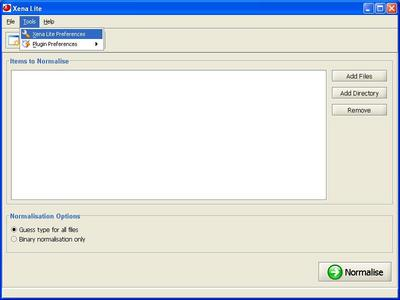

Xena Lite needs to know where normalised files should be saved after processing. Select Tools -> Xena Lite Preferences from the main menu.

Use the Browse button to open a file browser and navigate to the location where normalised files should be saved.
The Preferences box may also be used to set a location for Xena Lite to save its log file.